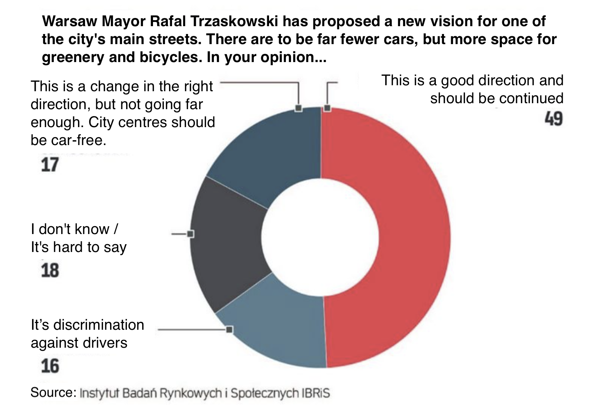

5 Beware: Mutant!
In this chapter we will introduce pseudo-charts. Creations that look like a graph, but misrepresent, distort or make it difficult to read the correct relationships present in the data. Where do such monstrosities come from? Sometimes it’s the result of a lack of understanding of the data one is presenting; sometimes it’s a lack of ability to present the data properly, even if one understands it; and sometimes it’s a deliberate act to show something in a seemingly better light. The list of bad charts is certainly very long, but this chapter is limited to presenting representatives of four classes of problems: errors on axes, misuse of pie charts, incorrect order of chart elements, and incorrect use of colors.
Primum non nocere, which is Latin for “first, do no harm,” is one of the guiding ethical principles in medicine. Its authorship is attributed to Hippocrates. The rule has been applied for more than two thousand years in situations where human life is at stake. This universal principle can also be useful when creating statistical charts. Let’s look for new means of communicating content, but first, let’s not harm or distort it. Remember it, Dear Reader, and in your attempts to visualize data, try not to create mutants that poison minds with toxic misinformation.
We’ve talked about mutant charts before, but there is a term in the literature – junk chart which was coined by Edward Tufte in his book The Visual Display of Quantitative Information (Tufte 2001). This is how he described charts that distort data, hide valuable information, charts that suggest something other than what the data show. Unfortunately, there are many such charts all around us. For the past 10 years, being active in the SmarterPoland Foundation, I have collected the worst copies every year, in order to make a plebiscite at the end of each year for the worst chart of the year. Over these 10 years, a sizable collection has accumulated. Below are the most toxic items from that plebiscite.
We are about to visit the darkest corners of the basement with failed data visualization experiments. We will show junk charts that offend good taste amd logic. This is not a chapter for the faint-hearted. Further reading of this chapter is at your own risk.
5.1 Mutant bars
Bar charts are a very popular and clear way to convey information. This is provided that we follow one rule: the bars must start at zero. When looking at the bars, our eye implicitly compares the ratio of their lengths, it’s simply how we interpret this kind of graphs. For this to make sense, the bars must start at zero.
In the article Drożejąca energia podnosi koszty utrzymania mieszkań, the author went to great lengths to convince the reader that energy prices are rising at a frightening rate. Looking at the chart below, one gets the impression that the cost of real estate is rising rapidly, which is consistent with the article. However, it is not consistent with the numbers shown in the chart. On a nine-month basis, the 3.4% increase was comparable to inflation, but the chart suggests a much more serious price increase, since the length of the bar, representing costs, has more than doubled.
In 2021, one of the leaders in the poll for the worst chart of the year was the chart from TVP 1 Health spending as % of GDP shown in Figure 5.3. The bars starting at 4% visually increase the growth of health spending in recent years. You have to admit, that 7% looks majestic against the pale of 4.5%–5%. The first 7 bars show a period of 7 years and give the impression that nothing has changed over the years, the last 5 bars show selected years over the next 12 years, further suggesting dynamic growth. What happened to the years 2017-2019 and 2024-2026? Half of the last bars show projections, not expenses incurred.
How much of a grotesque can we get if the bars don’t start at zero? Let the chart below showing the difference between men and women in their responses to the question of whether they have ever participated in loyalty programs be a warning. The difference between the two groups is exactly 0.3 of a percentage point. Is this actually a difference worth highlighting in this way?

5.2 Mutant circles
Pie charts have their staunch opponents due to the difficulty in accurately reading the data presented. If you plan to present charts to a sophisticated audience, consider options other than a colorful cake. The only situation in which a pie chart will somehow defend itself is when presenting the components of a whole. This is virtually the only permissible use that will not result in dangerous consequences. This was forgotten by the authors of the following charts.
The first example comes from the official website of the city of Wroclaw. The area and population of five cities are compared against Wrocław. What kind of graph should be used for this purpose? Certainly not a pie chart. Can you see on this graph that Łódź has a slightly larger area than Wroclaw, and Gdańsk, like Poznań, has an area more than 10% smaller than Wrocław?
Unfortunately, this is not the only case of using pie charts to poison susceptible minds. In the chart below, the different sections of the circle represent the prices of running a meter of pipe with different cross sections. Not only does the sum of these prices add up to nothing, but the use of perspective has the effect of expanding the cutouts at the top and bottom and narrowing the cutouts in the middle.

5.3 Mutant axes
Unfortunately, visual criminals harm chart axes in various ways. Although this crime is still not prosecuted by law, it is worth knowing what to look out for to avoid an unpleasant situation.
The chart above, which comes from the pages of a major news station in Poland, shows the number of measles cases in Poland. The conclusion comes to mind, there are more and more cases of the disease. But… why are only cases in even-numbered years shown? When complete data for a period of 13 years is presented (see the right panel), the situation looks different.
Some omit inconvenient years, others add something here and there. These are equally hedious crimes against information. Below is an example of a chart from the Science in Poland 2013 report, which shows declared spending on R&D (research and development).
This chart shows significant increases in declared spending, which the report says builds a backdrop of increasing innovation in companies. Unfortunately, if you take a closer look, you’ll find that the last bar shows aggregate spending over four years (or, more accurately, refers to plans for the next four years). If you divide the planned spending by four years, you get the amount of 1215 million PLN, which is a decrease of about 5% compared to 2012. This “innocent” aggregation on the horizontal axis has significantly changed the perception of the data presented.
A few years later, the Ministry of Education, under a different government, tweeted the graph shown in Figure 5.8. The intention is quite obvious, there will be more and more money for teacher payraises. More and more by the year, and by the end it’s so much that it barely fits on the graph.
But keep in mind that the last bar is the sum of 2017-2020 (it could just as well be the sum of 2014-2020). When one subtracts the numbers shown in previous years from this 6.3 billion, it turns out that in 2020 there will be 1.4 billion zlotys for the raise, more than twice as much as in 2019. The numbers seem to be there, but if this decrease were shown, the trend would no longer be so consistent.
The following chart from a major news portal shows the pension amount. The problem with this chart is the choice of ranges presented on the horizontal axis. They correspond to very different ranges of values, sometimes 100 PLN, sometimes 200 PLN, and sometimes 500 PLN. Because of this, the heights of the bars are not comparable with one another. Someone could inadvertently read it so that the most people get the highest pension, above PLN 3,500. However, if somebody else might choose other ranges on the horizontal axis to get a different story.

Graphs are often used to show changes over time. However, it is important to remember that time should always run to the right, otherwise the reader can be led astray.
The chart below from 2015 shows the results of a preference poll before the presidential election in Poland. Are the poll results for Bronisław Komorowski better than the previous month, or worse? This example vividly demonstrates the importance of the order of the bars on a graph. If one reads this chart without looking into the legend, one might get the impression that support for Bronisław Komorowski is growing. However, when you look at the legend, it turns out that the right, blue bar is the support in January, and the left – in February.
The chart below is from 2020 from the main news edition presented on TVP Channel 1. It shows the change in unemployment, but here too the time runs to the left instead of to the right. A less attentive viewer may get the impression that unemployment has fallen, although it has actually increased by 0.9 of a percentage point.
5.4 Mutant colors
Color is a very powerful spice in the world of charts. However, it is important to use it correctly. The rule to follow is to mark similar things with similar colors, and different things with different colors.

The graph in ?fig-colomutant is from the Rzeczpospolita website, and may suggest that less than half (49%) of those asked think that narrowing streets in Warsaw is a good idea. Perhaps the first impression would be different if the two parts coding the number of people supporting the idea were marked in a similar color (that would be 17% + 49%), and the only opposing answer was marked in a contrasting color.
There you go, what a surprise – more than 4 times as many people think it’s a good idea to narrow streets than that it discriminates against drivers. But this chart doesn’t capture that proportion very well. The culprits this time are the poorly chosen colors.
5.5 Tasks
Type the word “report” into an Internet search engine and open the first few links. Usually newer documents are higher in the results, so you’ll probably find some new government report or something from the national bank or another source. It’s time to take a closer look at the content.

- Try to find a bar plot in the report you found. Do the bars start at zero? Do their lengths make it easier to understand key information on the chart more quickly?
- Look for a pie chart in the report you found. Do the circle slices correspond to parts of the whole? When looking at the pie chart slices themselves, is it easy to see what story the chart is telling?
- Look at the graph in the margin, it shows the average height of women in different countries. Is the data presented correctly? What is the problem with this presentation?
If you would like to learn more about erroneous graphs distorting reality, you may be interested in the essay Info-pomyłka from the book Odkrywać! Ujawniać! Objaśniać! (Biecek 2016) (only available in Polish).